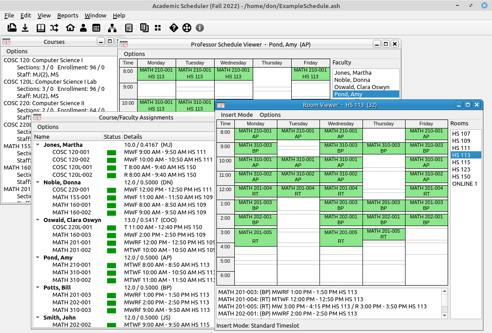

Program Overview
The Academic Scheduler is an application that allows the user to create, save, and export a semester schedule for an academic department. It uses multiple subwindow viewers of information of the schedule and a drag-and-drop interface to make course scheduling quicker and easier. There is certainly no possible way that this or any other program will be able to encompass all the intricacies in scheduling for every department at every university, but it is hoped that it will be sufficient and ease a significantly difficult task for the departmental leadership.

The subwindow views offered are as follows,
- Courses: List of courses offered by the department. The user will drag these to the Course/Faculty Assignments window to assign courses to faculty.
- Course/Faculty Assignments: This is a list of faculty course assignments. This window is the central point of the program. The user will drag courses from the Courses window to this one to assign classes to the faculty member and then drag classes from here to a room viewer window to place the classes into a room and time.
- Room Viewer: This is a viewer for all the courses that are assigned to a specific room. In addition, the room viewers allow courses to be dragged and dropped from the Course/Faculty Assignments window, or another room viewer, to them for room and time placement. You can have as many room viewers open as you would like.
- Professor Schedule Viewer: This is a viewer for all the courses that are assigned to a specific instructor. This window shows the course layout for a single professor's schedule. This view does not allow drag and drop of courses like the room viewer, but you can edit course properties from here. You can have as many professor schedule viewers open as you would like.
- Course Position Viewer: This is a viewer that shows the positioning of courses over the week and highlights overlaps. This helps determine if there are any critical time conflicts for student scheduling and if multiple sections are distributed sufficiently.
- Course Linker: The Course Linker is a way to create a main course/subsequent course relationship between courses. This is particularly important in the sciences where you have a lecture class and one or more lab courses assigned to that lecture. In the linker you can associate (link) as many subsequent (lab) courses to a single main (lecture) course. In this scenario, the main course will not be able to be scheduled for any times that overlap any of the subsequent classes and none of the subsequent classes will be able to be scheduled for a time that overlaps the main class. Subsequent classes may be allowed to have overlapping times as long as there are no conflicts with rooms or professor schedules. You can link classes at any time during the scheduling process, but it is best to do so after the course assignments and before placing the courses in rooms and times. If you try to link already scheduled classes with a time conflict the program will not let you do so.
- Standard Timeslots: A course can be scheduled for any time during the week. The standard timeslots allow the user to more easily schedule courses. Several of the drop options in the room viewers is to drop into a timeslot (or the start of a timeslot). So if there is a standard timeslot of MWF 8:00 AM - 8:50 AM the user can drag a course to one of those positions and drop it into the schedule. Most universities and/or departments have standard positions for course placement. These should be the standard timeslots used.
- Note Editor: This is a simple text editor for the user to add notes to the schedule.
The program also offers several reporting options. Most reports have two ways to view them, either as a document or as a table. The document format is really an HTML webpage. Document format allows the user to print the report to a printer or to export it to a PDF file. The table format allows the user to copy the report to the system clipboard as a tab delimited string that can be pasted into nearly any spreadsheet. The reports offered are as follows,
- Faculty List: Reports a table of faculty, their short designation, and an empty column (if you use the document format).
- Course Assignments by Course: Reports a list of all scheduled course assignments by course.
- Course Assignments by Professor: Reports a list of all scheduled course assignments by professor.
- Schedule Sorted by Course: Reports the entire schedule sorted by the course name.
- Schedule Sorted by Professor: Reports the entire schedule sorted by the professor's name.
- Schedule Sorted by Room: Reports the entire schedule sorted by the room name.
- Print Room Schedule Images: This will send the room schedule images to the printer.
- Print Professor Schedule Images: This will send the professor schedule images to the printer.
- Schedule Changes: This allows the user to load in a previous draft of the schedule and reports the changes that were made between the two versions.
- Merge Report: The merge report displays additions and conflicts in the merging two schedules. This should be done before the user does a merge of schedules. Merging schedules would primarily be used if there were multiple people working on different portions of a single schedule or if there were multiple departments that share resources.
The program also offers standard file saving and loading of schedules. The files that are saved contain all database information for the schedule. So when creating a new schedule, if one had been created previously, the user would open an old file and make the needed changes. These procedures and options will be discussed in other sections of this help system.